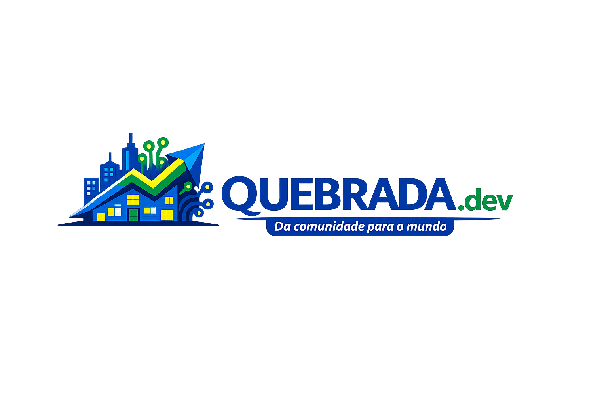
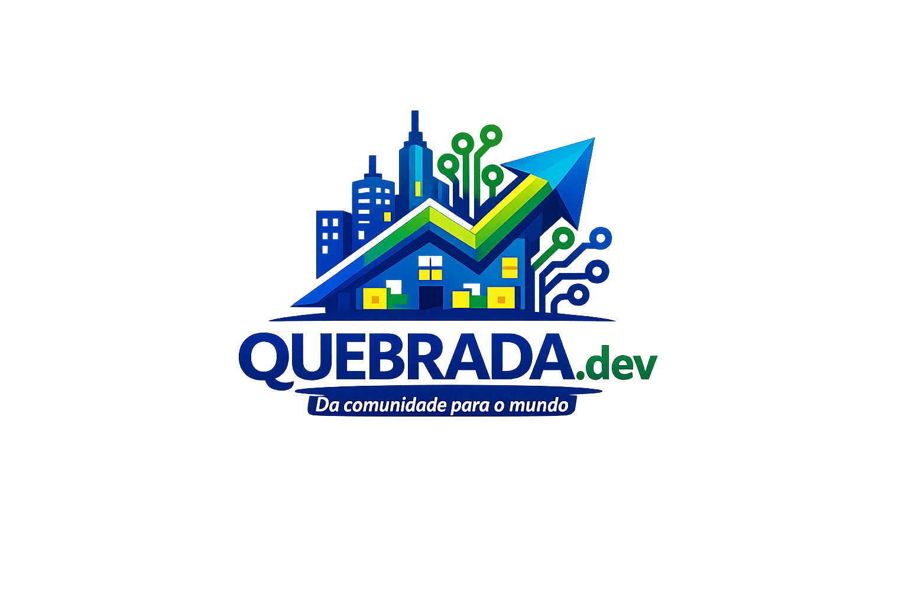

O Apagão Tecnológico
O setor de TI enfrenta um déficit crônico de profissionais qualificados no Brasil, enquanto talentos em potencial nas periferias são ignorados.

Democratizando o ensino de programação e lógica computacional para crianças em comunidades vulneráveis, transformando consumidoras de tecnologia em criadoras de soluções.

Por que o QUEBRADA.dev precisa acontecer agora?
O setor de TI enfrenta um déficit crônico de profissionais qualificados no Brasil, enquanto talentos em potencial nas periferias são ignorados.
Crianças de comunidades carentes sofrem com a falta de computadores de qualidade, internet estável e formação técnica básica.
Aprender a programar na infância estimula o raciocínio lógico, a criatividade e a resiliência, rompendo ciclos de exclusão social.
Uma trilha estruturada de forma lúdica, visual e gamificada.
Algoritmos básicos, estruturas de decisão e sequenciamento através de dinâmicas de grupo e jogos, sem uso inicial de computadores.
Raciocínio Lógico TroubleshootingIntrodução à programação visual utilizando a ferramenta Scratch (MIT). Criação de animações e jogos interativos.
Loops & Condicionais VariáveisPrimeiro contato com código escrito real (HTML5 e CSS3), desenvolvendo uma página web sobre o bairro ou interesses locais.
HTML5 / CSS3 Publicação WebDebates sobre navegação segura, privacidade, fake news e uso consciente da tecnologia para impacto comunitário.
Ética Digital Protagonismo SocialOs alunos participam de uma feira de tecnologia onde identificam um desafio real do bairro e constroem um site ou jogo explicativo propondo soluções para a comunidade.
Como planejamos expandir o impacto do projeto.
Implementação de uma turma inicial de 15 alunos em espaço parceiro da comunidade para validação do método.
Capacitação de novos instrutores voluntários (estudantes de tecnologia e jovens locais) via guia metodológico.
Expansão do modelo para outras comunidades através de uma plataforma aberta com metodologia documentada.
Buscamos investidores institucionais, empresas engajadas com pautas de ESG e organizações sociais para viabilizar o projeto piloto.
Doação direta de notebooks (usados/recondicionados), projetores e modems de internet.
Financiamento de consumo (lanches, uniformes, materiais) e bolsas da equipe por 6 meses.
Co-investimento para fornecimento de espaço físico e apoio institucional de longo prazo.